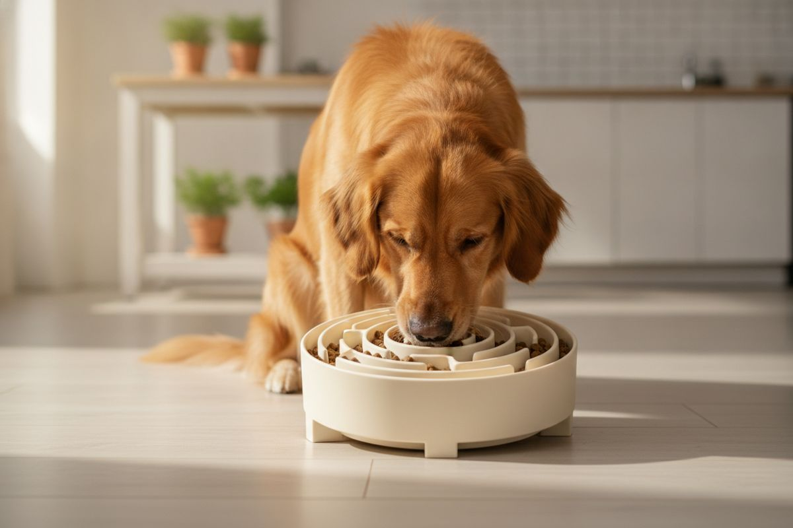

#ad Links on this page are affiliate links: we earn a commission if you buy, at no extra cost to you. As an Amazon Associate I earn from qualifying purchases. More
Buying filter 01
Feeding & enrichment
Bowls, stands, lick mats and puzzles. Each one is decided by one or two specs most listings bury. Here is what to check before you buy.
We have not tested these products. This page is a buying filter, not a review: it tells
you which specs decide whether the gear works, so you can judge any listing - including ones we don't link.

AI-generated photo · generic example, not a specific product
01
Slow feeder bowls
Ridge depth + base width
What to check
Ridge depth that suits the snout: deep channels for big or long-nosed dogs, shallow ones for flat-faced breeds that can't reach into deep grooves.
A wide, non-slip base - rubber feet or a weighted bottom - so the bowl doesn't skate across the floor mid-meal.
Dishwasher-safe material (stainless steel, ceramic or BPA-free plastic). Mazes trap food in the corners.
Skip it if Your dog already eats slowly - a snuffle mat or scatter feeding may be more fun.